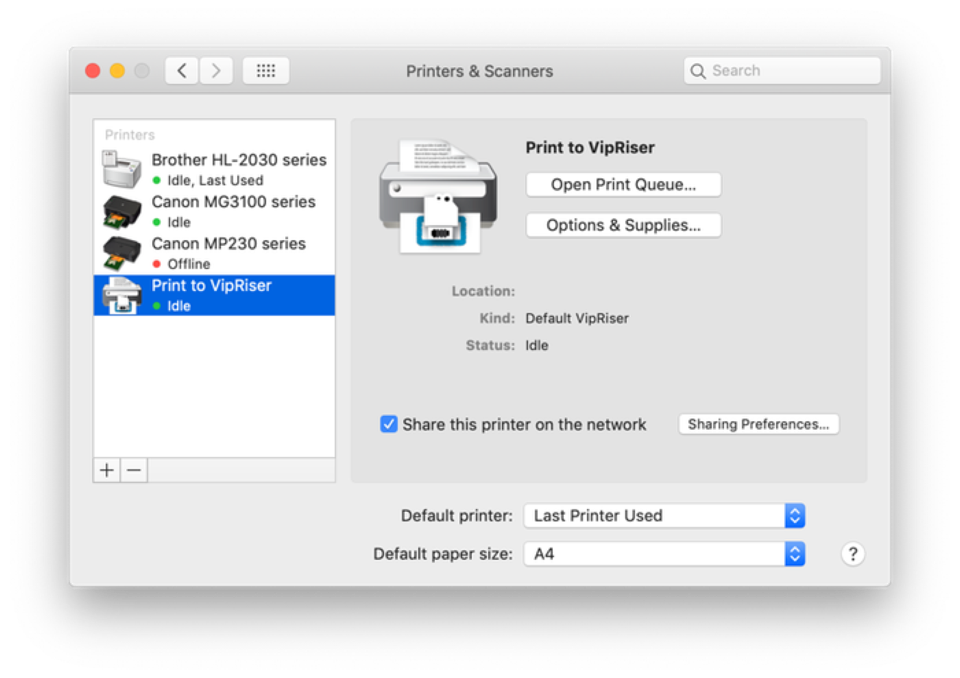

VipRiser
Virtual printer can produce PDF from any application that can print. VipRiser has been around since 2014 and is now part of VipRiserPDFOps.
Standalone installation should be considered TRIAL VERSION. If you find it useful and want to make sure its development continues, please consider installing VipRiser PDF Ops and purchasing non-interactive actions. This will unlock full functionality for you to use.
Installing virtual PDF printer
The virtual printer has two parts, printer driver and user application which is used to configure and control it.
- download the latest version
- open the VipRiser.dmg file
- copy VipRiser.app to your Applications folder
- launch the app to finish the installation process
Using the printer
After install, you should end up with Print to VipRiser printer in your print dialog box. You use it as any other printer from any application that can print.

Can’t be opened
If you get “can’t be opened because Apple cannot check it for malicious software”, please see information about launching 3rd party application.